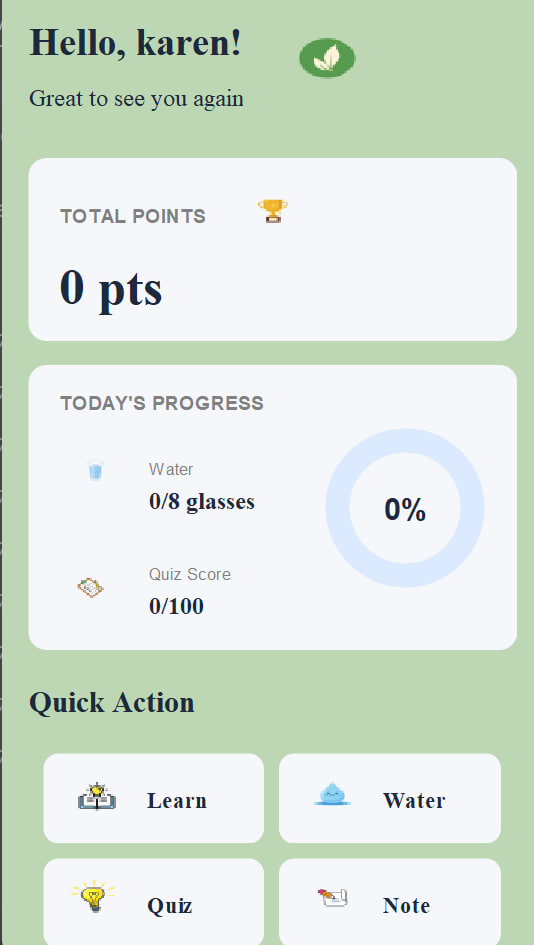
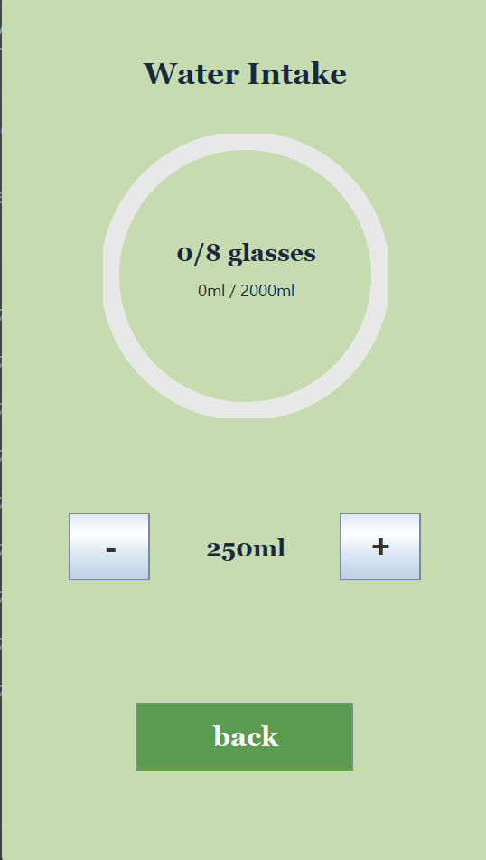
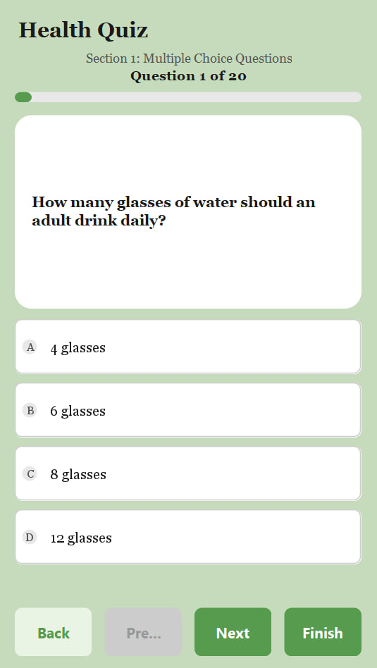
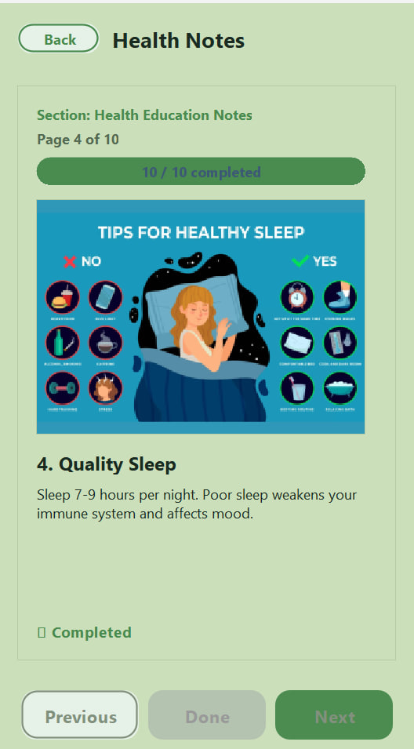

Team Project
HealthMate
A health tracking app with features for monitoring water intake, learning about health, and taking health quizzes.

Dashboard

Water Intake Tracker

Health Quiz

Health Education Notes
Drag or swipe the screenshots, or use the arrow buttons.